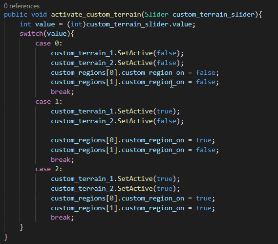
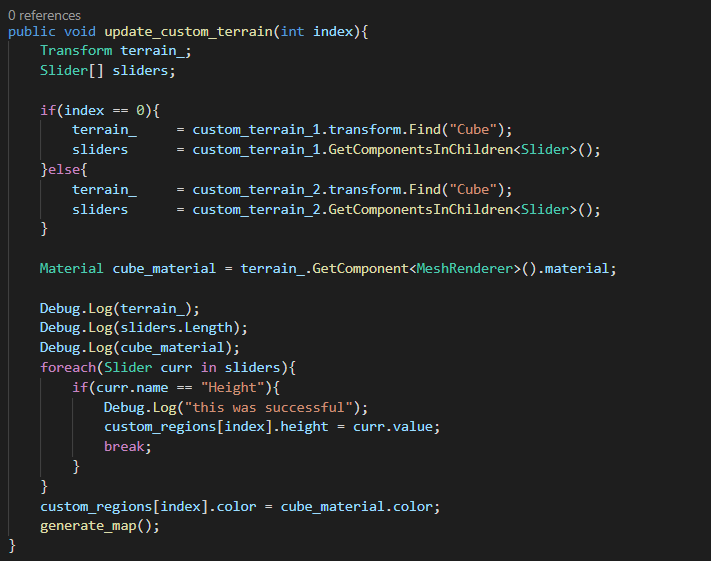

Custom Textures (10/28/2020)

For this week, I began working on stack color terrain together; giving the user the option to customize the map further.
Access most recent webbuild here: Click Link
Adding Custom Terrain Support (6 hours)
The motivation for custom terrain support is the ability to add multiple layers of custom perlin noise to the map. A game like Minecraft may contain multiple layers of perlin noise (ex. one for water biomes, one for item pickups, one for green terrain). To get this feature into the tool, I began implementing a custom terrain UI prefab, which has the following parameters:
- Height: customizes the height of the texture in the map.
- Name: a designated name for the texture provided by the user.
- Red: Texture red color.
- Green: Texture green color.
- Blue: Texture blue color.
- Cube: a cube that shows the user the results of blending the 3 RBG values together.
After spending time setting up the prefab, and getting the code logic for changing the cubes color working, I then added a way for the user to add/remove the custom textures as needed in the UI:
Furthermore, I had to figure out a way that I can add the custom textures to the existing color map. After spending a while troubleshooting different approaches, I modified my generate map function to reserve two spots in the color map for the user's custom textures. Some logic in the implementation is shown below:
 This approach initially did not work. After a few hours of debugging, I realized that some settings I had for the custom textures in the code were incorrectly set. Furthermore, I had to modify my exiting generate map code to account for the two entries reserved for the user's custom terrain:
Eventually I was able to get my code working with 1 custom terrain:
Then with 2 custom terrain:
For the future, I think I need to start considering cleaning up the UI so that it is more user friendly. I want to have it in a way that it can be immediately intuitive for someone to use. I also have to clean up the codebase so that it is better documented and cleaner concerning coding standards.